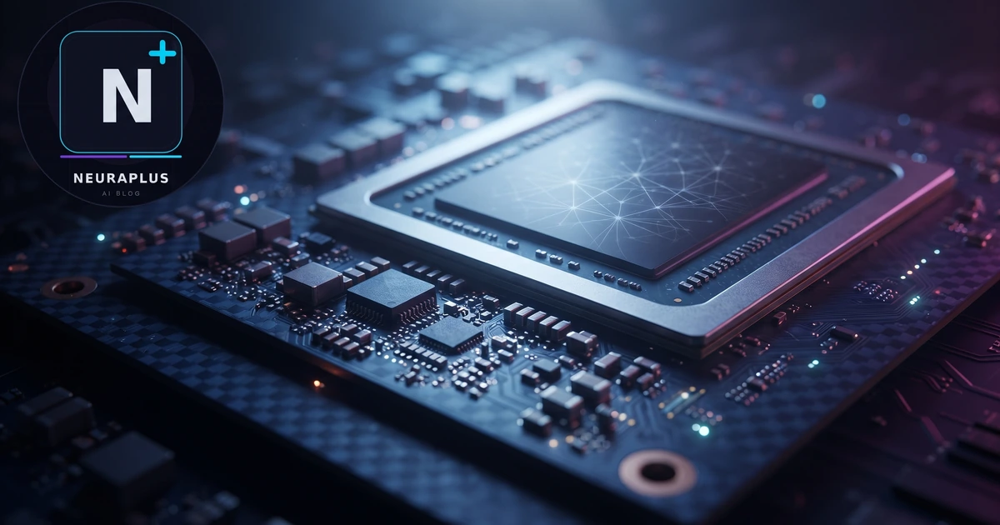

What Is the Groq Chip and How It Works: LPU Architecture Explained

In the race to accelerate artificial intelligence, most companies are competing on the same track — building bigger, faster GPUs. Groq took a different road entirely. The Groq chip is not a GPU — it is an entirely new class of processor called a Language Processing Unit (LPU), designed from first principles for one specific task: running large language models as fast as physically possible.
🔬 The Core Insight: GPUs are general-purpose parallel processors repurposed for AI. Groq's LPU is a single-purpose inference accelerator with a radically different memory architecture, execution model, and design philosophy — optimized exclusively to eliminate the bottlenecks that slow GPU-based AI inference.
What Is Groq?
Groq is an AI chip company founded in 2016 by Jonathan Ross — the engineer who created Google's first TPU (Tensor Processing Unit). The company's flagship product is the GroqChip, powered by the LPU (Language Processing Unit) architecture. Groq makes this hardware available through a cloud API — meaning anyone can access its extraordinary speed without purchasing hardware. At its fastest, Groq processes Llama-3 70B at 800 tokens/second — roughly 14x faster than an A100 GPU. To understand why these speeds matter in practice, see our Groq inference speed vs GPU comparison.
What Is an LPU (Language Processing Unit)?
An LPU is a processor architecture specifically designed to run autoregressive language model inference — the sequential token-by-token generation process that underlies GPT, Llama, Mistral, and all modern LLMs. Unlike a GPU that handles many different computational tasks (graphics, training, inference, scientific computing), an LPU does one thing: generate text as fast as possible.
The key hardware insight: autoregressive LLM inference is memory-bandwidth bound, not compute-bound. The bottleneck is not how fast you can do matrix multiplications — it is how fast you can move model weights between memory and compute. The LPU eliminates this bottleneck by putting all memory on-chip.
LPU Architecture Deep Dive
Tensor Streaming Processors (TSPs)
The LPU contains an array of Tensor Streaming Processors — specialized compute units optimized for the matrix multiply operations that dominate LLM inference. Unlike GPU's CUDA cores, TSPs have a fixed, deterministic data flow path — each TSP knows exactly what data it will receive and when, with no runtime scheduling overhead.
The SRAM Memory Fabric
Each Groq chip contains 230MB of on-chip SRAM — organized as a distributed memory fabric directly connected to the TSP array. This is the critical differentiator. Instead of external DRAM (like GPU's HBM3 or GDDR6), the LPU stores model weights and activations in SRAM right next to the compute units. No memory bus. No DRAM latency. No bandwidth bottleneck. For small to medium models, the entire model fits in SRAM simultaneously.
The SRAM Advantage — Why It Matters
SRAM (Static Random Access Memory) is the same type of memory used in CPU caches — fast, low-latency, but expensive and power-hungry per bit compared to DRAM. GPUs use DRAM because it's cheap and dense — you can fit 80GB on an H100 for reasonable cost. The trade-off: DRAM is 24x slower bandwidth than what Groq achieves with SRAM.
For LLM inference, this trade-off is catastrophic. Every forward pass requires loading all the model's weights from DRAM into compute units. At 55 billion parameters (FP16), Llama-3 70B = ~140GB of weights. On an A100 with 2TB/s bandwidth, loading these weights takes ~70ms per forward pass — directly limiting tokens per second. On Groq's SRAM fabric at 80TB/s, the same operation takes microseconds.
Compiler-Scheduled Execution — The Other Half
The SRAM architecture explains much of Groq's speed, but the compiler-scheduled execution model explains its consistency. GPUs use runtime dynamic scheduling — every clock cycle, the hardware decides which compute unit gets which data. This flexibility is powerful but expensive in cycles and energy.
Groq's compiler resolves all scheduling decisions at compile time. When you deploy a model on Groq, the Groq compiler (MLIR-based GroqFlow) analyzes the entire computational graph and creates a deterministic schedule — every TSP knows exactly what operation it will perform at every clock cycle, in what order, for every token generation step. Zero runtime decision overhead. Deterministic, predictable, consistent latency every time.
LPU vs GPU: Design Philosophy
| Design Aspect | GPU (H100) | Groq LPU |
|---|---|---|
| Primary purpose | General-purpose parallel compute | LLM inference only |
| Memory type | 80GB HBM3 DRAM (off-chip) | 230MB SRAM (on-chip) |
| Memory bandwidth | 3.35 TB/s | ~80 TB/s |
| Scheduling | Runtime dynamic | Compiler static |
| Model training | Full support | Not supported |
| Model variety | Any PyTorch model | Groq-compiled only |
| Inference speed | 55–90 tok/s (70B) | 800 tok/s (70B) |
| Latency consistency | Variable | Deterministic |
Related Reading: Now that you understand the architecture, see the complete competitive comparison in our Groq vs Nvidia for AI Inference 2026 guide — use cases, costs, and which platform wins for different workloads.